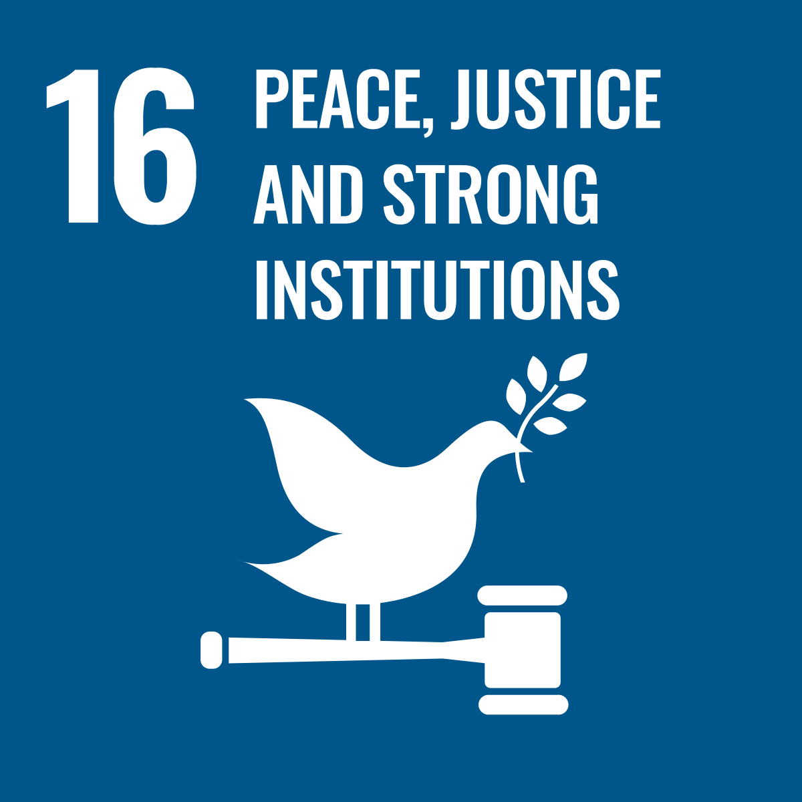

SDG Goal 16
Promote peaceful and inclusive societies for sustainable development, provide access to
justice for all and build effective, accountable and inclusive institutions at all levels
Goal 16 is about promoting peaceful and inclusive societies, providing access to justice for all and building effective, accountable and inclusive institutions at all levels. People everywhere should be free of fear from all forms of violence and feel safe as they go about their lives whatever their ethnicity, faith or sexual orientation. The following are the targets of this goal:
- Significantly reduce all forms of violence and related death rates everywhere
- End abuse, exploitation, trafficking and all forms of violence against and torture of children
- Promote the rule of law at the national and international levels and ensure equal access to justice for all
- By 2030, significantly reduce illicit financial and arms flows, strengthen the recovery and return of stolen assets and combat all forms of organized crime
- Substantially reduce corruption and bribery in all their forms
- Ensure responsive, inclusive, participatory and representative decision-making at all levels
- Broaden and strengthen the participation of developing countries in the institutions of global governance
- By 2030, provide legal identity for all, including birth registration
- Ensure public access to information and protect fundamental freedoms, in accordance with national legislation and international agreements
- Promote and enforce non-discriminatory laws and policies for sustainable development
